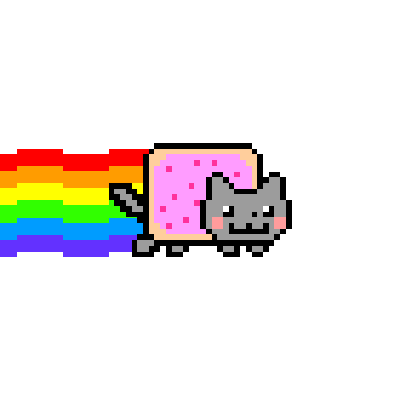

Surfer écolo, est-ce possible ?
Une émission en streaming émet autant de gaz à effet de serre que de fabriquer, transporter et lire un DVD !
greenIT : http://www.greenit.fr/2015/06/04/comment-reduire-l-empreinte-environnementale-du-web
 Bouton qui efface tout !Heureusement, il existe des gestes simples pour rendre votre navigation plus verte !
Kaizen : http://www.kaizen-magazine.com/bonnes-pratiques-surfer-ecolo